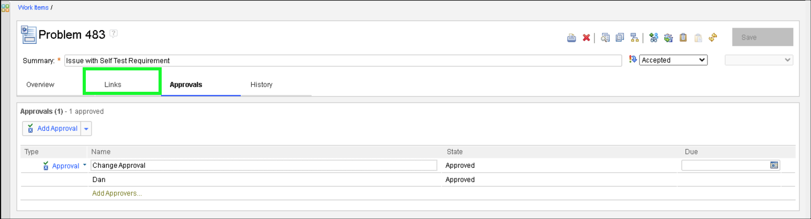
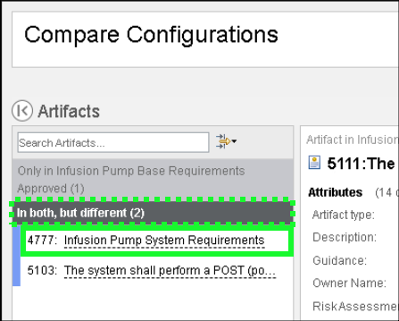

Reviews
- Click the Project Dashboard tab in the top header bar.
- Notice there are several reviews on the dashboard.
Birds-eye view
- Click 470: Review Infusion Pump System Requirements.
Note that the 470: Review Infusion Pump System Requirements is already complete (green checkbox). In a real project a quality review would be performed before baselining requirements and before entering a review cycle.
- Notice that Review 470 is a Work Item.
- Click the Approvals tab.

- Notice the different types of approvals and approvers.
- Click the Links tab.
- Notice the different Links shown.
Note that there are links to the baseline of the requirements the review was created against, another link to the final approved baseline (created after the review), and a link to a child work item (this was a problem identified during the review).
- Click the Review baseline link.
- Notice that the link opens a view to the module in the context of the Review Baseline.
- Click the web browser Back button.
- Click the 483: Issue with Self Test Requirement link.
- Notice the information captured for Problem 483.
- Scroll down and notice the comment added by Susan.

- Scroll up and click the Approvals tab.
- Notice that Dan has added himself as the approver for the work item.
A parent review work item cannot be closed until all children have been approved and closed.
- Click the Links tab.

- Click the 5103: The system shall perform a self test on initiation under Related Artifacts.
- Notice the link returns to the Requirements Review Baseline with 5103: The system shall perform a self test on initiation selected.
- Click the current configuration button.
- Click the Switch button.
- Click the Requirements Management Configuration tab in the Configuration Context dialog.
- Select Baselines in the Component pull-down menu.
- Enter an * in the search box to show all Baselines.
- Click Infusion Pump Base Requirements Approved in the list of All configurations.
- Click the OK button.
- Click the current context button.
- Click Compare Configuration... under Local Configuration.
- Click Baselines in the Component pull-down menu.
- Select Infusion Pump Base Requirements Review in the table.
- Click OK.
- Click Next two (2) times in the Compare wizard.
- Click In both, but different (2) button at the bottom of the side bar.

Birds-eye view
- Click 4777: Infusion Pump System Requirements.

- Click the 5103 requirement to select it in left-hand table.
Bug
Orange boxes may appear in the output as shown in the image above. They can be ignored.
- Click the Show changes link.
If the Show changes link doesn't appear, hover the mouse over the text for the requirement.
- Explore the information provided on the comparison screen.
- Click the X at top right to close the Artifact compare dialog.
- Click the Close button to close the Comparison wizard.
The platform can be configured such that changes cannot be delivered unless those changes are linked to a work item with the appropriate approvals. In this project, after the review cycle was completed and approved, a new baseline was taken and signed with an electronic signature as shown in the next steps.
- Click the current configuration button.
- Click the Infusion Pump Base Requirements Approved local configuration.
- Click the Electronic Signatures tab.
- Click the Show Details link.
- Review the Electronic Signatures details and then click the OK button.
The Review also has electronic signatures, both for the Approval and the final state change to Approved. This only appears in the History of the Review work item. Feel free to show that before showing Risk Management (found in the next chapter of this Act). The project dashboard also has a Reviews tab showing reports and summaries of Reviews.